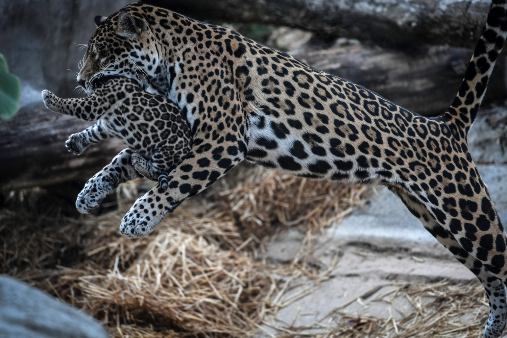

Jaguar (Panthera onca)
Estado bajo la norma NOM059: Amenazada. Conocido como ocelótl en náhuatl o balam en maya, el poderoso jaguar es una de las especies más emblemáticas de México, y un símbolo de poder y fuerza desde épocas precolombinas. Hoy en día, se ve amenazado por la destrucción de su hábitat, la caza ilegal, la reducción del número de sus presas —mamíferos, aves, reptiles y peces— y el aumento de asentamientos humanos. Se calcula que existen a la fecha unos 2 mil especímenes vivos, pero su supervivencia es incierta.